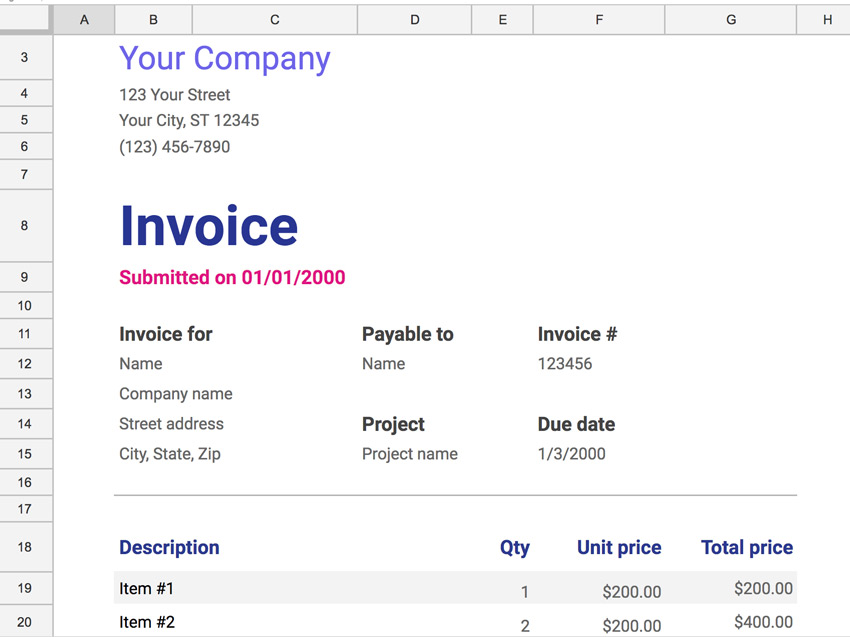
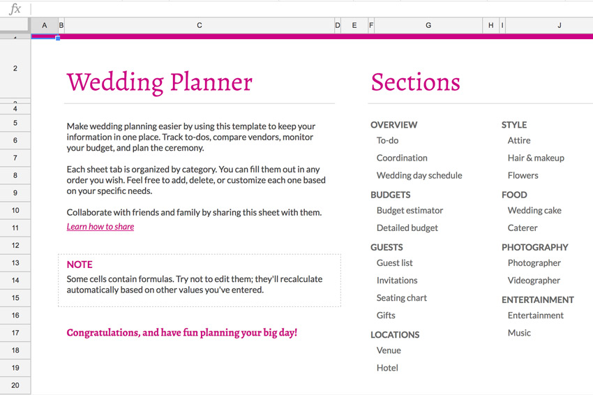
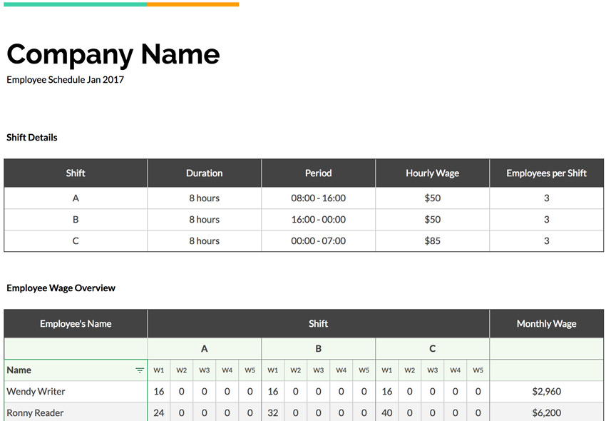
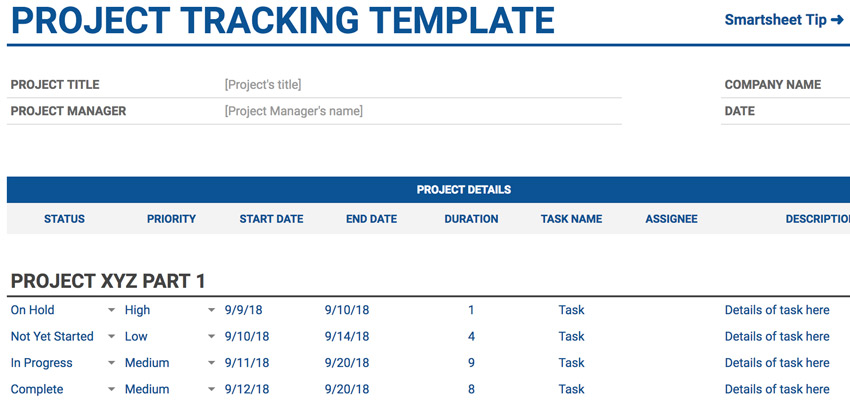

4 бесплатных шаблонов бизнес-таблиц
- Счет
Для фрилансеров или владельцев малого бизнеса счет-фактура является одним из наиболее важных документов в их бизнес-процессе. Он служит официальным уведомлением для клиентов о том, что ожидается платеж.
Запишите важные данные в шаблон счет-фактуры, например, контактную информацию и сумму позиции для выполняемой вами услуги.
Даже если вы используете платежную систему, например PayPal, для получения платежей, это поможет создать официальный шаблон счета, который вы можете прикрепить в виде PDF файла.
- Планировщик свадьбы
В этот важный день всё вертится вокруг любви и счастья, но время, предшествовавшее этому дню наполнено решениями и планами, которые необходимо выполнить.
Эта Таблица для планирования свадьбы содержит полный список предметов необходимых для планирования и поддерживает листы таблицы для каждой отдельной части.
Помните, что одна из лучших функций Google Таблиц - это возможность приглашать других сотрудничать с вами в режиме реального времени. Сделайте шаблон Google центральной базой для планирования предстоящего дня.
- Расписание смен сотрудников
Если у вас есть небольшой бизнес, вам может потребоваться отслеживать время работы вашей команды. Управление сотрудниками, работающими неполный рабочий день, зачастую подразумевает изменение их графика и выполнение других обязательств.
Зафиксируйте журнал смены сотрудников, который нужен для вашей компании, а также добавьте тех сотрудников, кому вы планируете платить каждую неделю.
Представьте, что эту таблицу можно использовать в качестве основного файла, который каждый сотрудник может использовать. Менеджеры могли бы иметь доступ к редактированию и изменению электронной таблицы, в то время как сотрудники могли просматривать расписание, чтобы узнать их рабочее время.
- Отслеживание проекта
Будь то личный проект или что-то важное в вашей повседневной работе, иногда требуется инструмент планирования, чтобы собрать все вместе
Используйте этот шаблон электронной таблицы для планирования отдельных частей проекта.
Этот шаблон электронной таблицы для отслеживания проекта идеальный выбор. Вы можете определять проекты, устанавливать сроки и даже дать доступ другим пользователям к таблице. Помните: Таблицы - предназначены для сотрудничества, поэтому не стесняйтесь включать свою команду в эту таблицу.
- Расписание смен сотрудников